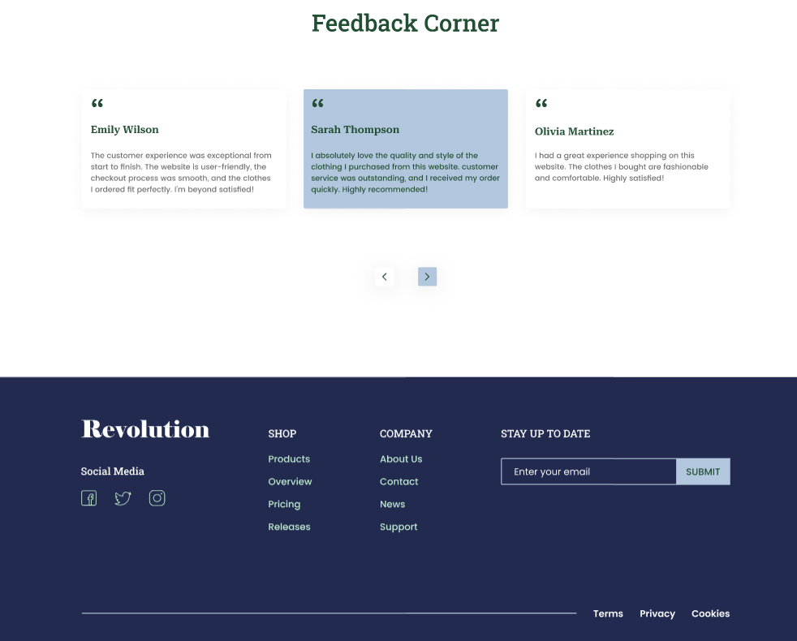
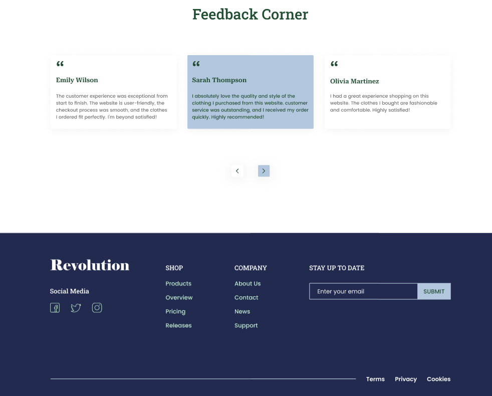
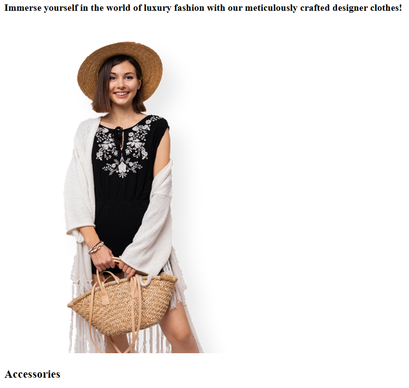
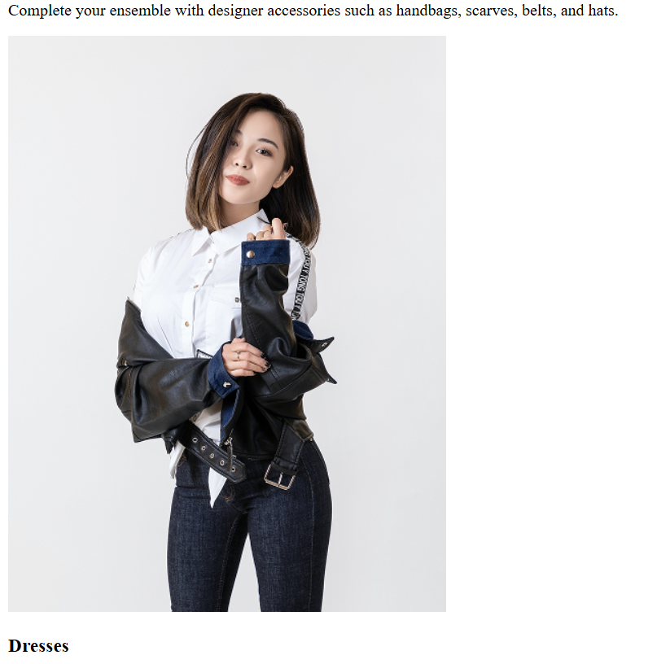
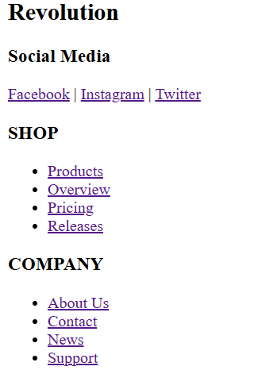
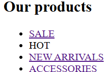
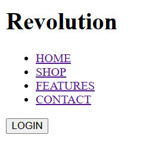

Звіти з лабораторних робіт з дисципліни:
"WEB-2025-орієнтовані технології."
Студентка группи ІС-21 Поліщук Дарія

Опис предметного середовища
Тема:
Створення вебсайту магазину одягу.
.
Мета:
написання сайту купівлі одягу з каталогом для перегляду. Довавання до сайту
відповідних елементів для
зручного
пересування між сторінками. Актуалізація данних для зручності користувача.
Об'єктом дослідження є:
сайт продажі одягу.
Предметом дослідження є:
аналіз роботи існуючих сайтів продажі одягу, одягу та взуття, тощо.
Постановка задачі:
розробка веб-додатку, з допомогою якого користувач може переглянути каталог
наявного товару та
замовити
його. Розробка алгоритмів сортування та підбору взуття за певними критеріями.
Додавання гнучкої
системи данних для постійного їх оновлення.
Бізнес логіка:
Каталог товарів:
- Список усіх доступних товарів з можливістю фільтрації за категорією, типом.
- Можливість сортування за ціною, популярністю, рейтингом, новизною, знижками.
Пошук:
- Функція швидкого пошуку товарів за назвою, брендом, категорією, кольором або іншими параметрами.
Деталі товару
- Докладний опис товару.
- Фотографії товару.
- Відгуки та рейтинг від інших покупців.
- Рекомендовані товари, які можуть зацікавити покупця.
Додавання в кошик
- Можливість додавати товари до кошика.
- Підрахунок загальної вартості замовлення.
Оформлення замовлення
- Вибір способу оплати (банківська картка, Apple Pay, Google Pay, післяплата).
- Вибір способу доставки (кур’єр, самовивіз, пошта).
- Відгуки та рейтинг від інших покупців.
- Підтвердження замовлення з email-повідомленням.
Тема, мету, місце розташування WEB-застосунка та місце звітного HTML-документу;
У програмному коді лабораторної работи №1 застосовані практичні практичні навички роботи з HTML-документом, таблицями, зображеннями, посиланнями, списками, формами Потрібно показати як створюються: ⎯ списки, ⎯ таблиці, ⎯ зовнішні та внутрішні відступи. Тема:СТРУКТУРА HTML-ДОКУМЕНТА. ВИБІР ПРЕДМЕТНОЇ ГАЛУЗІ. GitHub. РОБОТА З РЕПОЗИТОРІЯМИ. ОСНОВНІ ТЕГИ ТА АТРИБУТИ в HTML-ДОКУМЕНТІ. Мета: придбати практичні навички роботи з GitHub, репозиторіями, HTML-документом, таблицями, , зображеннями, посиланнями, списками, формами Створити шаблон звітного HTML-документом для відображення результатів роботи всіх лабораторних робіт. Посилання на репозиторій власного WEB-застосунку: посилання Посилання на репозиторій на живу сторінку власного WEB-застосунку: посилання Посилання на репозиторій з самостійними роботами: посилання Посилання на репозиторій живу сторінку з самостійними роботами: посилання Посилання на репозиторій звітного HTML-документа посилання Посилання на репозиторій на живу сторінку звітного HTML-документ посилання
Структуру головної сторінки WEB-застосунка

 

Таблиці

Основні теги
<table>– створює таблицю.<tr>– рядок таблиці.<td>– клітинка з даними.<th>– заголовок таблиці.<caption>– заголовок таблиці.<thead>,<tbody>,<tfoot>– поділ таблиці на частини.
Основні атрибути
border– задає товщину рамки.cellpadding– відступ всередині комірки.cellspacing– відстань між комірками.colspan– об'єднання комірок по горизонталі.rowspan– об'єднання комірок по вертикалі.width,height– задають розміри таблиці або комірок.
Зображення
 
Тег <img> в HTML
Тег <img> використовується для вставки зображень у веб-сторінки. Він є самозакритим (не потребує закриваючого тега).
Основні атрибути
src– шлях до зображення (локальний файл або URL).alt– альтернативний текст, який показується, якщо зображення не завантажилося.width– задає ширину зображення (у пікселях або відсотках).height– задає висоту зображення.title– підказка, що відображається при наведенні курсора.loading– спосіб завантаження зображення (lazy– відкладене завантаження).
Списки
  
Списки в HTML
Списки в HTML використовуються для структурування контенту. Вони можуть бути впорядкованими, невпорядкованими або списками описів.
Типи списків
1. Невпорядкований список (<ul>)
Невпорядковані списки використовують маркери (точки, квадрати, кола) для позначення елементів.
Приклад:
<ul>
<li>Елемент 1</li>
<li>Елемент 2</li>
<li>Елемент 3</li>
</ul>
Результат:
- Елемент 1
- Елемент 2
- Елемент 3
2. Впорядкований список (<ol>)
Впорядковані списки використовують нумерацію.
Приклад:
<ol>
<li>Перший пункт</li>
<li>Другий пункт</li>
<li>Третій пункт</li>
</ol>
Результат:
- Перший пункт
- Другий пункт
- Третій пункт
3. Список описів (<dl>)
Цей список використовується для створення списків термінів та їх визначень.
Приклад:
<dl>
<dt>HTML</dt>
<dd>Мова розмітки гіпертексту</dd>
<dt>CSS</dt>
<dd>Мова стилів для веб-сторінок</dd>
</dl>
Результат:
- HTML
- Мова розмітки гіпертексту
- CSS
- Мова стилів для веб-сторінок
Атрибути списків
type– змінює стиль маркерів у списках.start– вказує початкове значення для нумерації у<ol>.reversed– змінює порядок нумерації у<ol>.
Приклад з атрибутами
<ol type="A" start="3" reversed>
<li>Третій пункт</li>
<li>Другий пункт</li>
<li>Перший пункт</li>
</ol>
Результат:
- Третій пункт
- Другий пункт
- Перший пункт
Висновок
Під час виконання даної лабораторної роботи ми
успішно досягли поставленої мети - придбали практичні навички роботи з
HTML-документами, таблицями, зображеннями, посиланнями, списками та формами. Ми
глибше розібралися зі структурою HTML-документа та вивчили, як правильно
організовувати вміст сторінки для досягнення оптимального результату.
Однією з ключових навичок, які ми отримали, є здатність створювати таблиці, які
допомагають організовувати і візуально представляти дані на веб-сторінці. Ми також
навчилися вставляти зображення, додавати посилання на інші сторінки та ресурси,
створювати різні види списків та форм для взаємодії з користувачем.
Основною частиною цієї лабораторної роботи було створення шаблону звітного
HTML-документа, який можна використовувати для відображення результатів роботи всіх
лабораторних робіт. Це дозволить нам легко організувати та відстежувати прогрес у
вивченні предметної галузі і відображати наші досягнення у структурованому та
зручному форматі.
Отже, завдяки цій лабораторній роботі ми здобули важливі навички роботи з HTML.